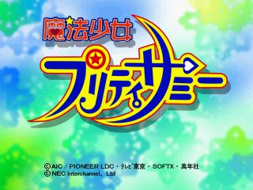
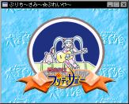
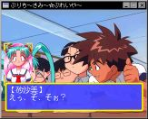
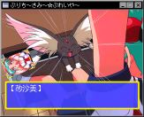
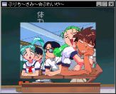
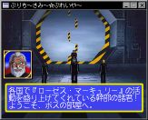
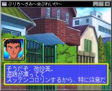

|  |
|---|
セガサターン用ソフト「魔法少女プリティサミー『恐るべし身体測定！核爆発５秒前！！』
をX680x0上でプレイするソフトを作りました。といっても完全な物ではないんですが・・・。
今のところ、とりあえずゲームをプレイすることはできるのですが、後半になって、以前の選択が
展開に影響してくるあたりになると、うまく分岐されません。また、ムービーの再生もできません。
このあたりを解析された方っていらっしゃいませんかねぇ（ムービーのほうはちょっとマズいけど）。
いたらぜひ連絡下さい（笑）。
学園祭で展示したりしたのですが、そのときはオープニングムービーにTV版とOVA版のオープニング
をシネパックで圧縮したものをかわりに再生してたりしました。かなりの毒電波を
飛ばしていたわけですが結構受信者が多かったようです。
みなさん、好きですねぇ（笑）。
プリティサミーの標準画像ファイル形式である「*.PF1」をWindowsのソフト
Susieから読めるようにするPlug-inを作りました。
詳しくはこちらを御覧下さい。
C++プログラムの練習がてら始めたのですが、いろいろいじっているうちに
結構凝ったものになってしまいました(^^;。
ほぼ、本物と同じ処理をしてます。ただ、相変わらず
フラグの動きが良く理解できない・・・。
選択肢なしで分岐するときは何をたよりに分岐すれば良いんだ？
|   |
|---|
| ゲーム画面。半透明処理もばっちり |
|   |
| 回転する砂沙美ちゃんなど、各種演出処理も再現 |
|   |
| 実はこれらのシナリオも走ったりする |
とりあえず未完成なのですが、一般公開始めます。